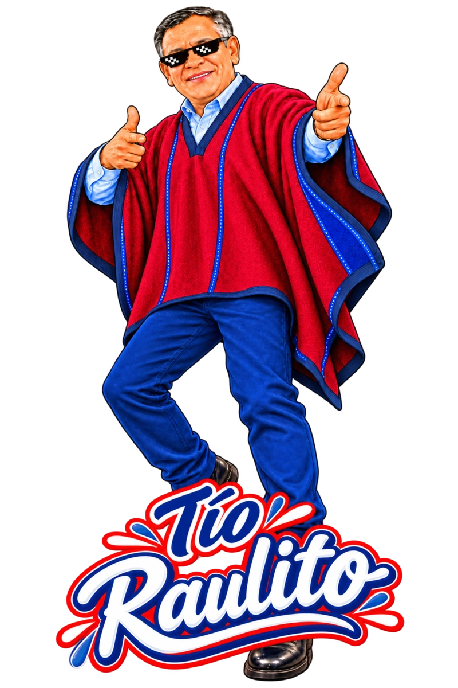
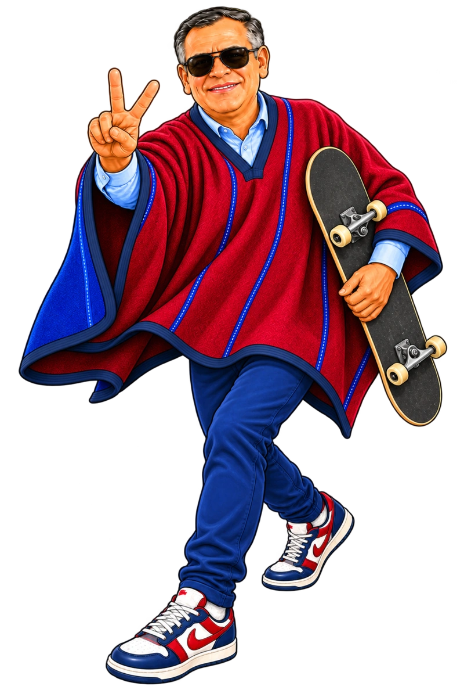
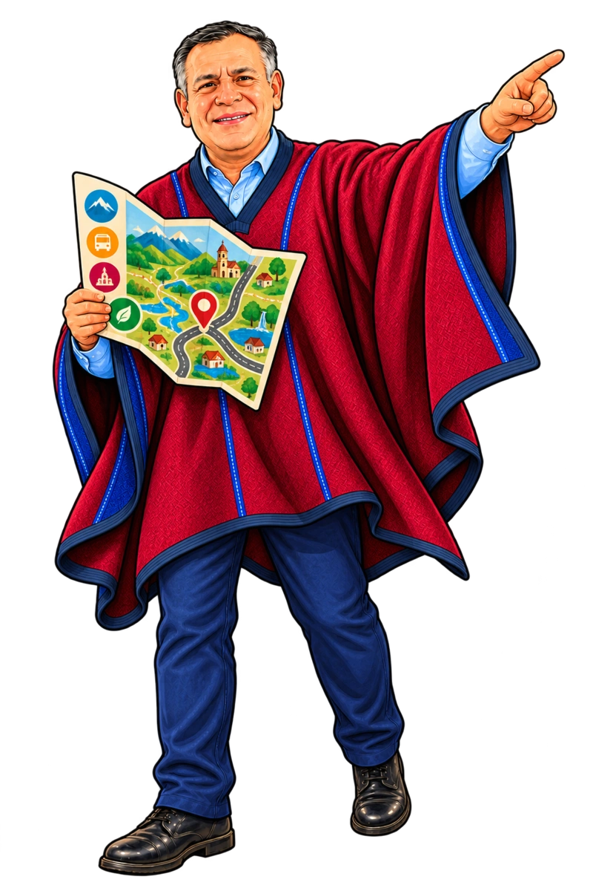
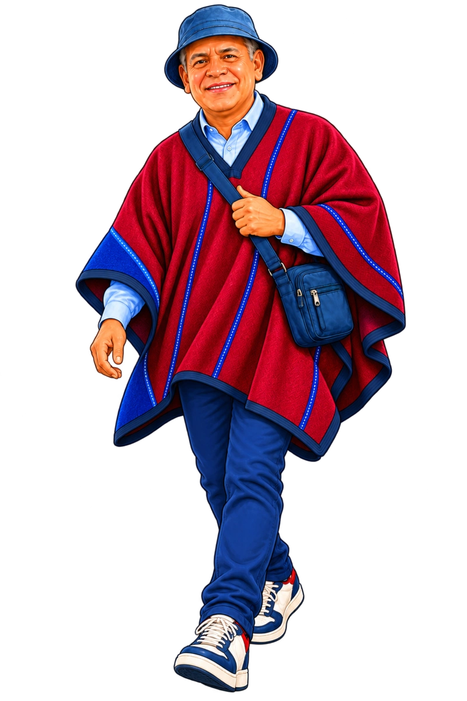
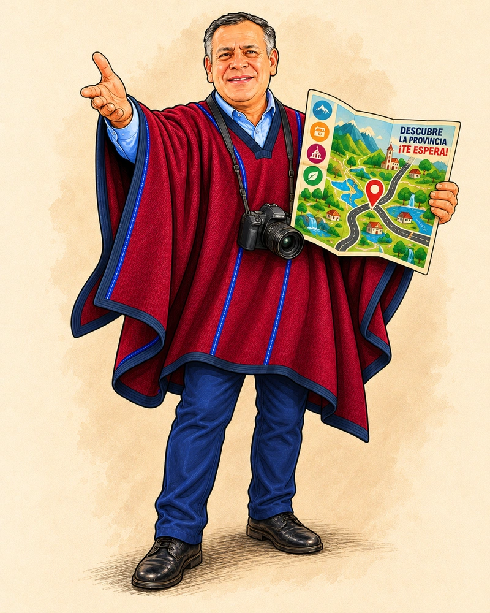
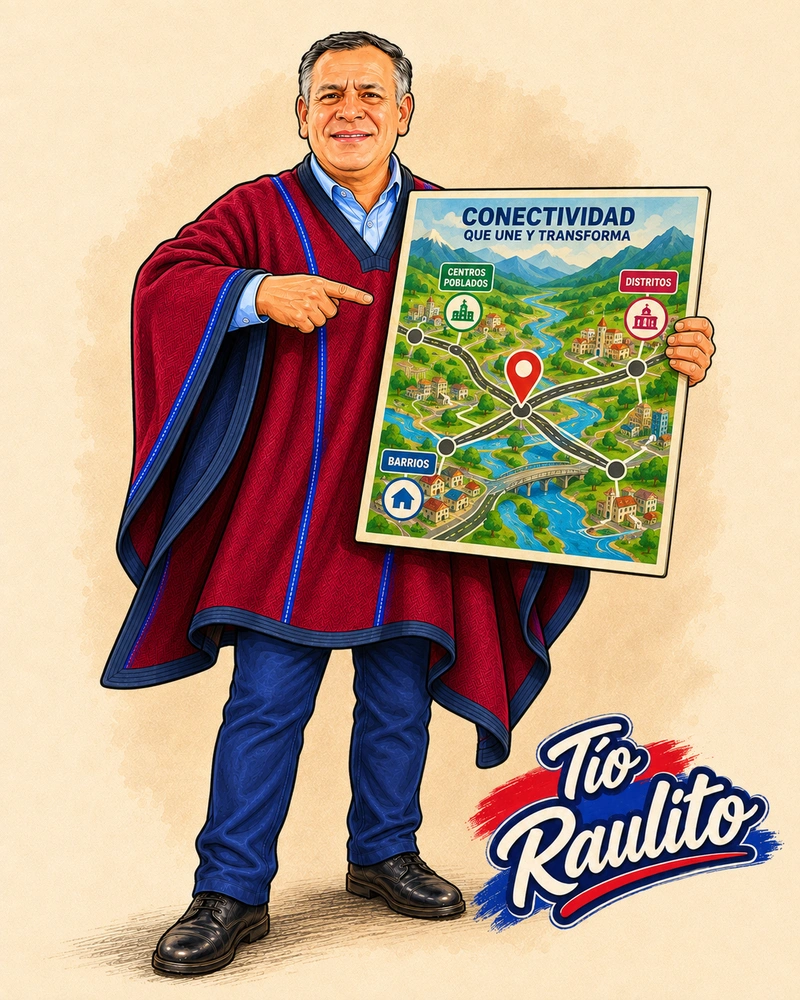
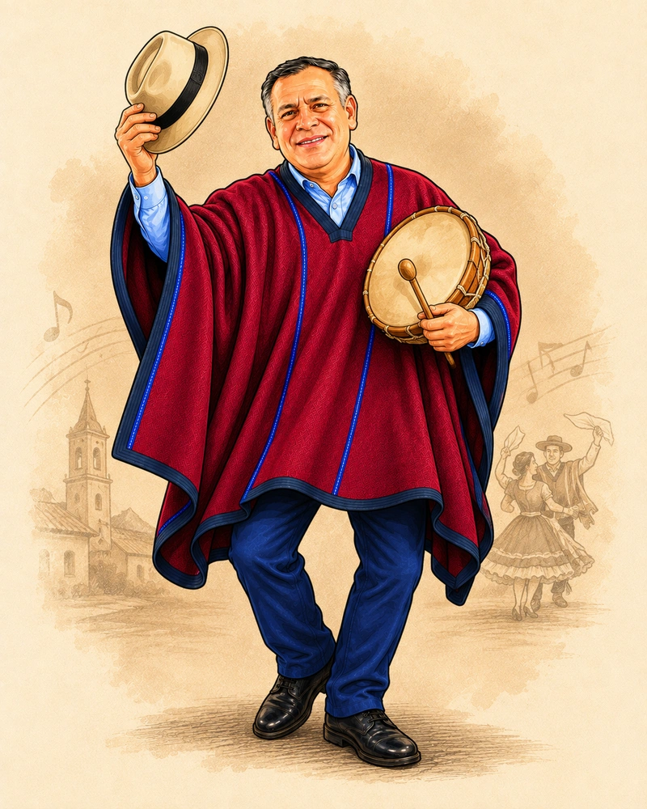
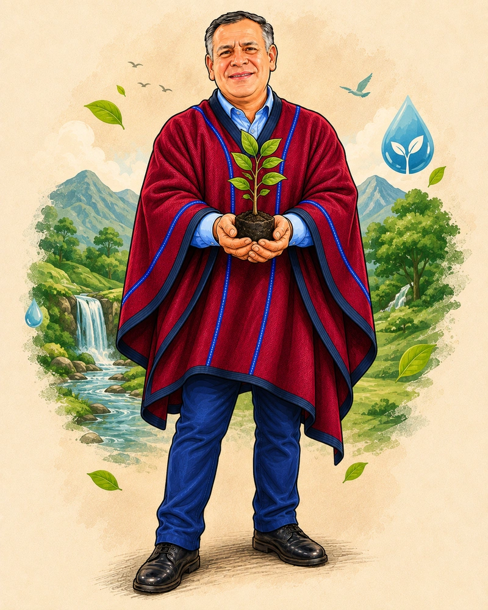
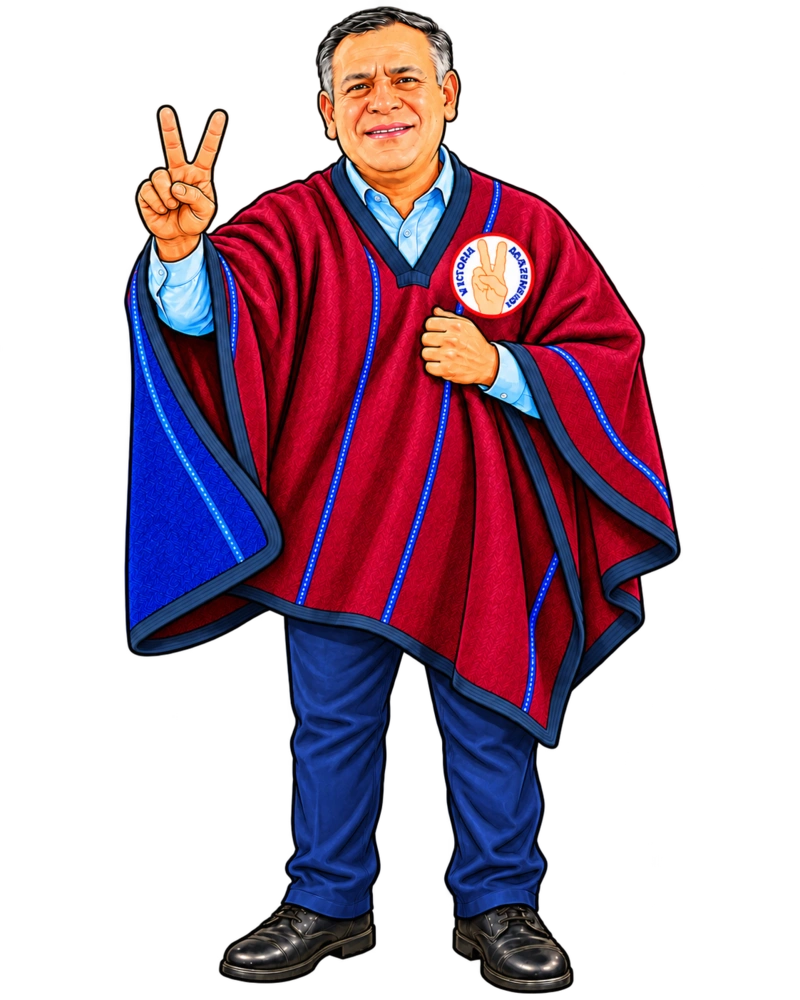

Con el Tío Raulito ✌️NO TE
NO TE
VAYAS
PARA
CRECER.
Tu talento no debería tener que irse lejos para despegar. Chachapoyas se puede mover contigo.
Desliza y mira lo que se mueve ↓1 de cada 4votantes tiene entre 18 y 29 años
+4 milnuevos votantes desde 2022




Propuestas jóvenesMÁS
MÁS
CHAMBA.
MÁS IDEAS.
MÁS BARRIO.




TURISMOMetas 2027–2030LO QUE SE
Mira el Plan de Gobierno ↗
LO QUE SE
MIDE,
SE PUEDE
EXIGIR.
Mira el Plan de Gobierno ↗Propuesta impulsada por la candidatura de Víctor Raúl Culqui Puerta a la Municipalidad Provincial de Chachapoyas, por el Movimiento Regional Victoria Amazonense.
Raúl Culqui · Victoria Amazonense
Sigamos haciendo historia ✌️
